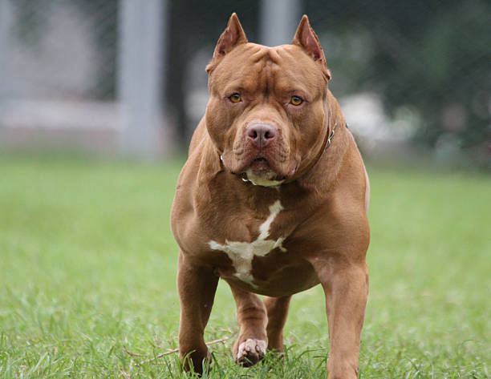
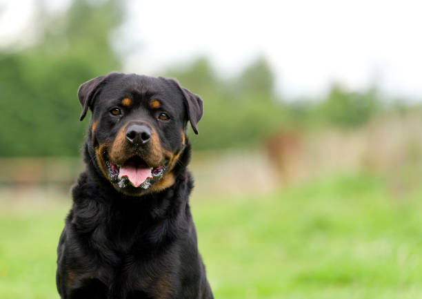

Understanding Aggressive Dogs
Why Do People Own Aggressive Dogs?
Aggressive dogs are often owned for specific purposes, such as protection, guarding property, or as status symbols. Some breeds are naturally more assertive and territorial, making them ideal for roles in security or law enforcement. Additionally, some owners may be drawn to the perceived strength and loyalty of these breeds, believing they can provide a sense of safety. However, owning an aggressive dog requires responsible training, socialization, and a deep understanding of the breed's needs to ensure they are well-behaved and safe around others.

Common Aggressive Breeds
While aggression is often a result of poor training or mistreatment, certain breeds are more prone to aggressive tendencies due to their instincts and history. Here are some breeds often labeled as aggressive:
- Pit Bull Terrier: Known for their strength and loyalty, but often misunderstood due to their history in dogfighting.
- Rottweiler: A powerful and protective breed that requires experienced handling.
- Doberman Pinscher: Intelligent and loyal, but can be territorial if not properly trained.
- German Shepherd: Often used in police and military roles due to their intelligence and protective nature.

How to Manage Aggressive Dogs
Managing an aggressive dog requires patience, consistency, and professional guidance. Here are some tips to help:
- Early Socialization: Expose your dog to different people, animals, and environments from a young age.
- Positive Reinforcement: Reward good behavior with treats, praise, or playtime.
- Clear Boundaries: Establish rules and stick to them to create a sense of structure.
- Professional Help: Consult a dog trainer or behaviorist if aggression becomes unmanageable.

Most Aggressive Breeds
Understanding Dog Aggression
While any dog can show aggression depending on training and environment, certain breeds have stronger protective instincts and physical capabilities that make them potentially more dangerous. The Pit Bull Terrier, Rottweiler, and Doberman Pinscher are often considered among the most aggressive breeds due to their strength, bite force, and historical use in guarding and protection roles. However, proper training and socialization can significantly mitigate aggressive tendencies in these breeds.
Pit Bull Terrier
Origin
United Kingdom/United States
Bite Force
235 PSI
Price
$500 - $1,800
Lifespan
12-14 years
Full Description
Pit Bull Terriers are muscular, powerful dogs originally bred for bull-baiting and later as farm dogs. They have a strong prey drive and can be aggressive toward other animals. While human aggression is not characteristic of well-bred Pit Bulls, their physical strength and determination make them potentially dangerous if improperly trained or socialized. They account for a significant portion of serious dog bite incidents worldwide. Pit Bulls are banned in several countries and many U.S. cities. However, advocates argue that proper ownership and training can result in loyal, affectionate pets. Their high pain tolerance and tenacity mean they may not show warning signs before attacking.
For more information...Rottweiler
Origin
Germany
Bite Force
328 PSI
Price
$400 - $1,700
Lifespan
8-10 years
Full Description
Rottweilers are large, powerful dogs originally bred to drive cattle and pull carts for butchers. They have a natural protective instinct and can be aloof with strangers. Rottweilers require firm training and socialization from an early age to prevent aggressive tendencies. Their bite force of 328 PSI is among the strongest of any dog breed. Rottweilers are frequently used as police and guard dogs due to their intelligence, strength, and intimidating appearance. They can be dominant and may challenge owners for leadership if not properly trained. While loyal to their families, Rottweilers can be dangerous in the wrong hands and are responsible for numerous fatal attacks worldwide.
For more information...Doberman Pinscher
Origin
Germany
Bite Force
305 PSI
Price
$1000 - $2,000
Lifespan
10-12 years
Full Description
Doberman Pinschers were originally bred as personal protection dogs and have maintained their reputation as formidable guard animals. They are extremely fast, intelligent, and powerful with a bite force of 305 PSI. Dobermans are naturally suspicious of strangers and have strong territorial instincts. While they can be loyal family pets with proper training, their protective nature makes them potentially dangerous. Dobermans require extensive socialization and consistent leadership to prevent aggressive behavior. They are often used in police and military work due to their trainability and intimidating presence. Without proper exercise and mental stimulation, Dobermans can become destructive or develop behavioral issues. Their speed and athleticism make them particularly dangerous if they become aggressive.
For more information...